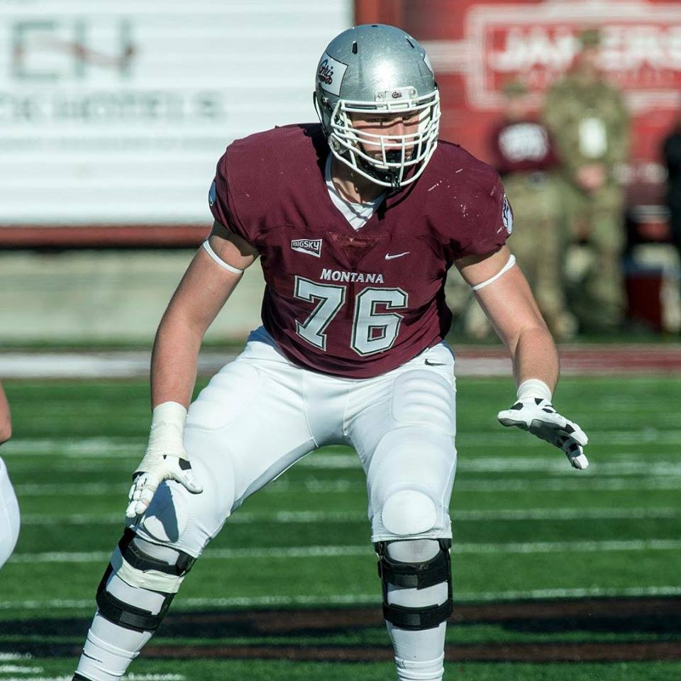
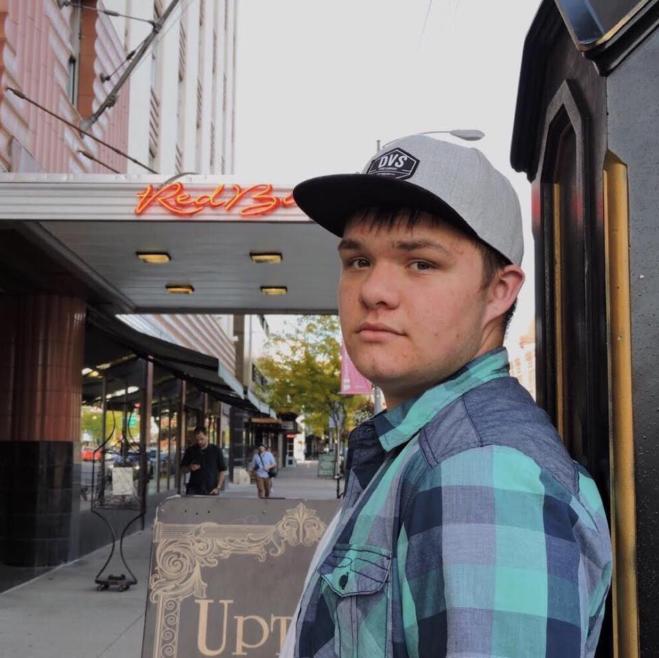

About us
}
Home
Watch Our Films
About us
Contact us
Colton Keintz

Colton is an aspiring screenwriter who is currently pursuing his Digital Filmmaking degree at the University of Montana, and as you can see, he is also a member of the Griz Football Team!
Gage Ball
Gage is the technical expert of DAZMO, he is a master behind the camera and has edited a lot of our films! That being said, he's also a great actor, having a leading role in "The Entertainment Fairy"
Dylan Austin

The do-it-all man of DAZMO, Dylan has been the face of the franchise since its birth and never says no to anything! His creativity has sparked many successes such as the Entertainment Trilogy and Go Home Henry!
Dave Mattson
Dave has been a fantastic actor for DAZMO, gaining fame in many of our short skits and will have an important role in our upcoming film, "ATF", and he has often been the glue that holds us together